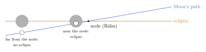

Chapter 8: Eclipses: Myth, Geometry and Computation¶
8.1 Why Eclipses Mattered¶
An eclipse (grahaṇa, “seizing”) was, for the Indian astronomer, both a religious event and a test. Dharmaśāstra texts treat the time of an eclipse as especially powerful: bathing in sacred water, giving gifts and reciting mantras then are highly meritorious, and many land grants recorded in copper-plate inscriptions say they were made on the occasion of an eclipse. Eating and cooking were restricted before and during an eclipse. The almanac therefore had to announce eclipses in advance, with their times. At the same time an eclipse was the most public check on an astronomical system. If a predicted eclipse failed to appear, or appeared at the wrong time, everyone could see it. Debates between schools frequently turned on eclipses, and the Kerala astronomer Parameśvara revised the parameters of his day after decades of comparing eclipse predictions with observation.
8.2 From Svarbhānu to the Shadow¶
8.2.1 The myth¶
The Ṛgveda (5.40) tells how the demon Svarbhānu pierced the Sun with darkness. In the later myth, told in the Mahābhārata and the Purāṇas, the demon Rāhu, disguised among the gods, drank some of the nectar of immortality produced by the churning of the ocean; the Sun and Moon exposed him, and Viṣṇu cut off his head with his discus. The immortal head, Rāhu, pursues the Sun and Moon and swallows them from time to time, but they emerge again through his severed throat. In some later forms of the story the headless body becomes Ketu. Rāhu became one of the nine “planets” (grahas) of Indian astrology.
8.2.2 The geometrical explanation¶
By the time of the classical siddhāntas the cause of eclipses was explained geometrically. Āryabhaṭa states it in a single line, the second half of a verse whose first half identifies the Moon with water, the Sun with fire and the earth’s shadow with darkness (Āryabhaṭīya, Golapāda 37):
Āryabhaṭīya, Golapāda 37 (second half)
chādayati śaśī sūryaṃ śaśinaṃ mahatī ca bhūcchāyā
“The Moon covers the Sun, and the great shadow of the earth covers the Moon.”
Varāhamihira devotes a chapter of the Bṛhatsaṃhitā to Rāhu and argues there that eclipses are caused by the Moon and the earth’s shadow, as the astronomers compute them, and not by a demon; he reconciles this with tradition by saying that Rāhu, by a boon, is present at eclipses to receive the offerings made then (Varāhamihira 1981–1982). Brahmagupta took a more conservative line and criticised astronomers who contradicted the scriptural account of Rāhu. Al-Bīrūnī, who read his work in the eleventh century, sharply criticised Brahmagupta for this, observing that he knew the true cause of eclipses perfectly well (al-Bīrūnī 1888). The episode shows an astronomer negotiating between technical knowledge and religious authority, a tension found at several points in the tradition (Minkowski 2002).
In the siddhāntas, Rāhu and Ketu were redefined as the two nodes of the Moon’s orbit, the points where it crosses the ecliptic, which move slowly backwards around the zodiac in about 18.6 years. Rāhu is the ascending node and Ketu the descending node, \(180^\circ\) away. The astronomers thus kept the mythological names and gave them a new, geometrical referent. (In older texts ketu also means a comet or meteor.)
8.3 When Eclipses Occur¶
A lunar eclipse can happen only at full moon, when the Moon is opposite the Sun, and a solar eclipse only at new moon. Since the Moon’s orbit is inclined to the ecliptic (by \(4^\circ 30'\) in the siddhāntas; about \(5^\circ 09'\) in reality), at most full and new moons the Moon passes above or below the earth’s shadow or the Sun. An eclipse occurs only when the syzygy (full or new moon) happens close enough to one of the nodes that the Moon’s latitude \(\beta\) is less than the sum of the relevant apparent radii:
where, for the solar eclipse, the Moon’s latitude must be corrected for parallax as seen from the observer’s place. In practice this means that the Moon must be within roughly one to one and a half degrees of the ecliptic, and the syzygy within some ten to eighteen degrees of a node. The siddhāntas first test whether this condition is met, and only then carry out the full computation.

Because the Sun passes each node once a year, there are two “eclipse seasons” each year, a little less than six months apart (the nodes move backwards, so the seasons come about nineteen days earlier each year). In every year there are at least two solar eclipses somewhere on the earth, and in some years as many as seven eclipses, solar and lunar, in all. Any given place, however, sees a total solar eclipse only rarely, on average once in several centuries, while lunar eclipses are frequently visible. The experience of eclipses on which Indian astronomers could draw was therefore mainly of lunar eclipses and of partial solar eclipses.
8.4 Computing a Lunar Eclipse¶
The procedure of the Sūryasiddhānta (chapter 4), which is typical, can be summarised as follows (Burgess 1860; Montelle 2011).
-
Compute the true longitudes and daily motions of the Sun and Moon, and the longitude of the node, at the moment of full moon.
-
Compute the apparent diameters of the Sun and Moon. The Sūryasiddhānta makes them proportional to the bodies’ true daily motions, so that a body appears larger when it moves faster (because it is nearer).
-
Compute the diameter of the earth’s shadow at the Moon’s distance, from the diameters of the earth and Sun and their distances, by similar triangles.
-
Compute the Moon’s latitude at the full moon from its distance from the node.
-
From the latitude and the radii, compute the magnitude of the eclipse (the part of the Moon’s diameter covered, grāsa).
-
Compute the half-duration (sthityardha): the time from first contact to mid-eclipse is the distance the Moon must travel relative to the shadow, divided by its relative speed \(v\):
\[t_{1/2} = \frac{\sqrt{(r_{\text{shadow}} + r_{\text{Moon}})^2 - \beta^2}}{v}.\tag{8.3}\]The half-duration of totality uses \(r_{\text{shadow}} - r_{\text{Moon}}\) in the same way.
-
Because the Moon’s latitude changes during the eclipse, repeat the computation of the times of first and last contact with the latitude at those times, until the results no longer change (an “iterative” or asakṛt procedure).
Example 8.1 (An illustrative lunar eclipse)
The numbers in this example are rounded values chosen for illustration, of the right order of magnitude; they are not taken from a particular eclipse. Suppose that at the moment of full moon the angular radius of the earth’s shadow at the Moon’s distance is \(40'\), the Moon’s angular radius is \(16'\), the Moon’s latitude is \(20'\), and the Moon moves relative to the shadow at \(30'\) an hour.
The Moon’s centre must come within \(40' + 16' = 56'\) of the centre of the shadow for any part of it to be eclipsed. Since its least distance is \(20'\), it is eclipsed; the part of its diameter covered is \(56' - 20' = 36'\), more than the whole diameter of \(32'\), so the eclipse is total.
The half-duration from first contact to the middle of the eclipse is
and the half-duration of totality is
The whole eclipse would last about three and a half hours, of which about 53 minutes would be total. A siddhānta astronomer would carry out the same steps with his own values, expressed in minutes of arc and nāḍikās, and would then refine the times of contact by iteration.
8.4.1 The vocabulary of an eclipse¶
The siddhāntas and almanacs describe an eclipse with a fixed vocabulary. The first contact is sparśa (“touch”), the middle madhya, and the last contact mokṣa (“release”); the beginning and end of totality are called sammīlana (“closing”) and unmīlana (“opening”). The amount of the disc covered is the grāsa (“mouthful”), and a total eclipse is khagrāsa or sarvagrāsa. Almanacs still announce eclipses with the times of sparśa, madhya and mokṣa, the magnitude, and the direction of first contact, which determine the timing of the ritual observances described below.
8.5 Computing a Solar Eclipse¶
A solar eclipse is harder, because what matters is not the Moon’s position as seen from the centre of the earth but as seen from the observer on its surface. The Moon is close enough for this difference, the parallax, to amount to as much as a degree, twice the Moon’s apparent diameter. The siddhāntas divide the parallax into two components:
-
lambana, the component along the ecliptic, which changes the time of apparent conjunction;
-
nati, the component perpendicular to the ecliptic, which changes the Moon’s apparent latitude and hence whether, and how much, the Sun is eclipsed at that place.
Both are computed from the position of the point of the ecliptic that is highest above the horizon at that moment (the “nonagesimal”, vitribhalagna), which in turn depends on the observer’s latitude and the time. Since the parallax changes the time of conjunction, which changes the parallax, the computation must again be iterated. The Sūryasiddhānta devotes its fifth chapter to these computations, and later astronomers, from Brahmagupta to the Kerala school, refined them (Burgess 1860; Montelle 2011). Solar eclipses were the hardest phenomena to predict, and their predicted times and magnitudes were the least reliable.
8.6 Drawing the Eclipse¶
The siddhāntas also teach how to draw a diagram of the coming eclipse (parilekha), showing the eclipsed disc, the shadow (or the Moon) and the directions from which the eclipse begins and ends. The direction depends on two angles of “deflection” (valana): one due to the observer’s latitude (akṣavalana) and one due to the inclination of the ecliptic to the equator (ayanavalana). Such diagrams appear in manuscripts and were drawn for patrons; they allowed the predicted eclipse to be compared with the real one, not only in time but in orientation.
8.7 Indian Eclipse Theory in Comparison¶
The Indian astronomers were not the first to predict eclipses, nor the only ones to explain them correctly. Babylonian astronomers were predicting possible lunar eclipses by the seventh century BCE, using numerical cycles, among them the 18-year cycle of 223 synodic months now called the Saros. Greek astronomers from the fifth century BCE knew that the Moon is eclipsed by the earth’s shadow, and Hipparchus and Ptolemy computed eclipses geometrically, with parallax (Montelle 2011; Neugebauer 1975). The Indian siddhāntas inherited the geometrical approach and developed it in their own way, with their own parameters, rules for apparent diameters, parallax algorithms and iterative methods.
Two cycles are often confused. The Saros of 223 synodic months (about 6585.3 days, or 18 years and 11 days) is an eclipse cycle: eclipses tend to recur after this interval. The Metonic cycle of 235 synodic months (almost exactly 19 years) is a calendar cycle that brings the phases of the Moon back to the same dates of the solar year; it is not an eclipse cycle. The siddhāntas do not use either cycle for prediction. They compute each eclipse from the positions of the Sun, Moon and node, which their integer period relations already contain.
8.8 Handbooks, Tables and Observation¶
Most eclipse predictions were made not from the full siddhānta rules but from handbooks (karaṇas) and tables. Brahmagupta’s Khaṇḍakhādyaka (665), Bhāskara II’s Karaṇakutūhala (1183) and Gaṇeśa Daivajña’s Grahalāghava (1520) were widely used; the last provides methods for screening possible eclipses quickly. In south India the vākya system gave the Moon’s position in memorised sentences (Chapter 10), and Tamil calendar-makers computed eclipses with counters and memorised tables, a method that a French astronomer saw demonstrated in the 1760s (Section 13.8).
Parameśvara of Kerala (c. 1360–1455) reports that he observed eclipses over a period of some five decades and found discrepancies between the times computed by the standard methods and those observed; his Dṛggaṇita of 1431 was designed to remove them (Sarma 1972). His pupil’s pupil Nīlakaṇṭha discussed eclipse observations in his Jyotirmīmāṃsā, insisting that the agreement of computation with observation is the test of an astronomical system (Chapter 10). This is the clearest evidence of a systematic link between observation and parameter revision in Indian astronomy.
How accurate the predictions were cannot yet be stated with precision, because few Indian eclipse predictions have been compared systematically with modern retrocalculation. Parameśvara’s own reports of discrepancies suggest that, as an estimate, errors of the order of tens of minutes in the times of lunar eclipses were not unusual when a text’s parameters had drifted, and solar eclipses, which depend on the difficult parallax computation, were harder still. That would be a respectable performance for naked-eye astronomy, of the same order as in other pre-modern traditions; claims of minute-level precision for ancient Indian eclipse predictions have no support in the evidence.
8.9 Eclipses in Religious and Social Life¶
The religious treatment of eclipses gave the astronomer’s prediction its public importance. The Dharmaśāstra texts and the later digests (nibandhas) treat an eclipse as a time of impurity and of great opportunity for merit. Before and during it, cooking and eating are avoided; at its end, people bathe, if possible in a river or sacred tank, and give gifts. Solar eclipses in particular drew crowds to sacred places: the Bhāgavata Purāṇa (10.82) tells of the Yādavas and others gathering at Kurukṣetra for a solar eclipse, and the eclipse pilgrimage to Kurukṣetra continues today. Kings and wealthy donors made grants on eclipse days, and the copper-plate charters that record them are among the main sources for the history of Indian kingdoms. Popular customs connected with eclipses, many of them concerning pregnant women, varied by region and community; they rest on belief, not on any physical effect of eclipses.
The same events had a place in other communities. Islamic practice prescribes a special prayer at an eclipse, and Muslim rulers in India employed astronomers who could announce them. Jain and Buddhist texts also discuss eclipses, the Jain cosmology explaining them by a dark planet passing in front of the Sun or Moon. Across these traditions the astronomer’s ability to say in advance when an eclipse would come, and how much of the Sun or Moon would be covered, was valued as a practical and religious service.
8.10 Eclipses and History¶
Because inscriptions often record eclipses (as the occasion of a grant) together with the date in an Indian era, the month, the tithi and sometimes the weekday, eclipses are an important tool for verifying the dates of Indian historical documents. The tables of Sewell and Dikshit (1896) were designed partly for this purpose. Attempts to date much earlier texts (the Ṛgveda or the Mahābhārata) from the eclipses they mention have been less successful, because the references are mythic or literary and can be matched with many different eclipses.
8.10.1 Why grants record eclipses¶
The Dharmaśāstra texts count gifts made at an eclipse, a saṅkrānti, an equinox or a solstice among the most meritorious, and kings and donors timed their grants of land and villages accordingly. Thousands of copper-plate charters and stone inscriptions therefore give, with the era and year, the month, the fortnight and the tithi, often the weekday and the nakṣatra, and the occasion: “on the occasion of an eclipse of the Sun”, “at the Uttarāyaṇa saṅkrānti”. For the historian these details are a gift in a second sense. A date in an era alone can be misread, because the epigraphist may not know whether the year is current or elapsed, in which month the year began, or whether the months are amānta or pūrṇimānta (Chapter 13); a date that also names a tithi, a weekday and an eclipse can be tested, because only a few days in a long span of years satisfy all the conditions together (Sircar 1965).
8.10.2 Verifying a date¶
The method was worked out by the epigraphists of the late nineteenth century, among them J. F. Fleet and Franz Kielhorn, who computed the details of hundreds of inscriptions; Sewell and Dīkṣit’s tables (Sewell and Dikshit 1896) and later L. D. Swamikannu Pillai’s Indian Ephemeris (1922) made the computation routine. The procedure is the reverse of making an almanac. One converts each candidate year into the Julian calendar, finds the day on which the stated tithi of the stated month was current, checks the weekday, then the nakṣatra, and finally whether an eclipse or saṅkrānti fell on that day. If all the details agree for one interpretation of the year, the date is regarded as verified, and the interpretation that fits (elapsed or current year, amānta or pūrṇimānta months) becomes evidence for the reckoning used in that region and period. Much of what is known about the regional usage of the eras in Table 13.4 was established in this way.
The test cuts both ways. A date whose details cannot be reconciled under any reasonable reading casts doubt on the document, and irregular dates are one of the criteria by which epigraphists have identified copper plates that were forged, or rewritten later, to support claims to land. Some of the eclipses named in grants cannot be found at all, or were not visible where the grant was made; whether such a date reflects the prediction of a local almanac, an error of the scribe or a later fabrication has to be decided case by case, and a mismatch is not by itself proof of forgery (Sircar 1965).
8.10.3 Eras and epochs in the inscriptions¶
Inscriptions also show how the astronomers’ epochs entered public life. The best-known example is the Aihole inscription of the Cālukya king Pulakeśin II, composed by the poet Ravikīrti, which gives its date in two ways: 3735 years after the Bhārata war, and 556 years of the Śaka kings. Since Śaka 556 corresponds to 634/635 CE, the inscription places the war in 3102/3101 BCE, that is, at the beginning of the Kali age as the astronomers computed it (Chapter 6). The identification of the war with the Kali epoch was thus current in the Deccan within about a century and a half of Āryabhaṭa; it is evidence for the spread of the astronomers’ chronology, not for the date of the war. Later inscriptions sometimes give the Kali year beside the Śaka year, and Kerala authors occasionally dated their works by the number of days elapsed since the Kali epoch (the kalidina, Chapter 12), a direct transfer of the astronomer’s day-count into ordinary dating.
Further Reading¶
Montelle (2011) places Indian eclipse reckoning in the context of Babylonian and Greek methods. Burgess (1860) translates the eclipse chapters of the Sūryasiddhānta; Sarma (1972) describes Parameśvara’s work. Sircar (1965) explains how epigraphists use the astronomical details of inscriptions, and Sewell and Dikshit (1896) provide the tables for checking them.